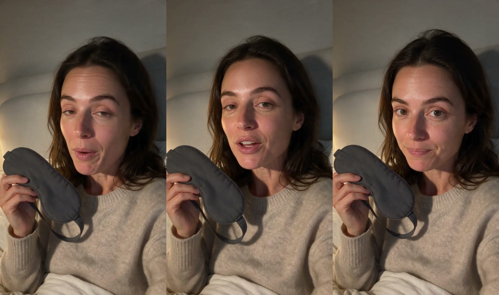

The demo reel / CORVA hook test
The same ad, three different hooks, you decide.
Three vertical ads for CORVA, a weighted and gently heated sleep mask we invented for this page, sit side by side here. They are the same film in every respect but one: the opening line the presenter speaks. Same person, same room, same closing line. Every frame is AI-generated. Watch all three and decide which opening you would keep.
Why these three can be compared at all
Across the three ads, nothing moves except the opening line itself. The room, the sweater, the light, the framing and the final spoken line all stay fixed. Hold everything else still, and the hook becomes the only variable a viewer is reacting to.
Three ads produced separately can differ in countless ways, so a difference in response could come from anywhere. Here, because everything around the opening is pinned, whatever you respond to differently comes down to the opening — the line and the way it is said — and not to the production around it.
Three openings, one ad
“It's late, your mind's still racing, and the room won't go dark enough.”
This opening names the friction before offering relief, so the viewer leans in because the moment already fits their evening. It suits comfort and wind-down products, and buyers whose audience already feels the problem and needs no education — only the relief of being understood.
“Honestly, I didn't think winding down could feel this easy every night.”
The payoff arrives before the product has earned an explanation, betting that the felt ease does the persuading. It suits aspirational comfort buys, and buyers whose category is crowded with problem-led ads, since leading with the reward is a posture their competitors rarely take.
“It's not the dark that does it — it's the weight and the warmth.”
By withholding the answer, the opening builds a small mystery, so attention carries into the body. It suits considered purchases and analytical buyers whose audience likes to feel clever, where a teasing claim invites them to stay and learn the rest.
The part that never changes
“Now I just put this on, let the warmth do its thing, and drift.”
The closing line had to land after any of the three openings, which is the real constraint on writing it. It cannot resolve one angle better than another, so it stays even-handed about the problem, the payoff and the unclosed loop alike, and the opening stays the only thing that moves.
This is one render, not three matched ones. The back half of every cut is the same file, placed behind each opening in the edit, and the closing card reading “Warm, weighted, yours.” is drawn on in the same pass. We then compared the finished files against each other frame by frame, because a build script doing the right thing and a shipped file being right are different claims.

How it was built
- 01
One still, not three
A single vertical image of the presenter holding the mask, generated at 9:16. Every one of the four video renders on this page starts from that same image, which is why the room, the sweater, the lamp and the framing are not merely similar across the three cuts. They are the same frame.
- 02
Three openings
That still is fed to Seedance 2.5 as the first frame, three times, changing only the spoken line and its delivery. The voice is generated in the same pass as the picture, so the lip-sync comes out of the render rather than being dubbed on afterwards.
- 03
One body, reused
The back half is a fourth render from the same still, made once and placed behind all three openings. It is not re-generated per cut, so there is nothing for it to drift into.
- 04
End card in the edit
The closing card is drawn by ffmpeg, not by the video model. Generated video renders lettering unreliably, and a mangled brand name on a portfolio piece is worse than no brand name.
- 05
Check before keep
The finished files are read back with ffprobe and compared frame by frame, not eyeballed: the shared half of the three cuts had to measure as the same footage before this page could say it was.
The brief we wrote ourselves
- Product
- A weighted, gently heated sleep mask, charcoal-gray, no logo.
- Audience
- DTC brand owners and marketers judging whether an AI studio delivers.
- Constraint
- AI footage only, one vertical shot, the body identical across all three.
What to watch for
The handover
The opening and the body are separate renders, so a real cut sits where they meet. We left it visible rather than dissolving it away.
The light, not a lamp
No lamp is in frame. The warm side-light and the shadow it leaves across her far cheek are what say evening.
The blank mask
No logo sits on the charcoal-gray fabric, so the mask reads as a comfort object rather than a branded prop waiting to be sold.
What this page is not
Every frame in these ads is AI-generated. CORVA does not exist outside this page — no client hired us, and the ads have never run as paid media, so we claim no performance. With a real product the craft would stay the same, but the results would finally be measurable.
We do not know which of these three works better, and this page cannot tell you. There is no view count, no watch time and no click-through rate behind any of it. To decide, take the versions to your own audience and your own spend: run them as a small, even test, watch where attention holds and where it drops, and keep the opening your viewers reward. The answer belongs to them.
We have no published reviews yet, so we are not going to borrow credibility we haven't earned. No client names, no engagement numbers, no invented case studies. What we can show you is the work and the method, in full, and let you judge whether it clears your bar.